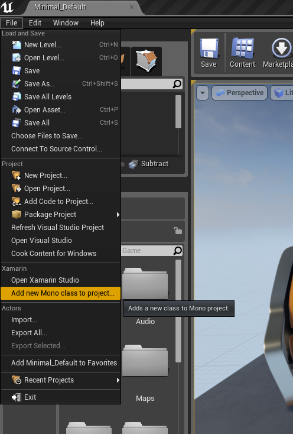
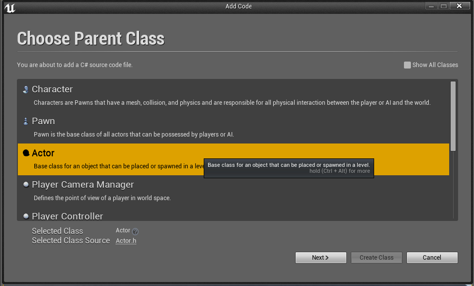
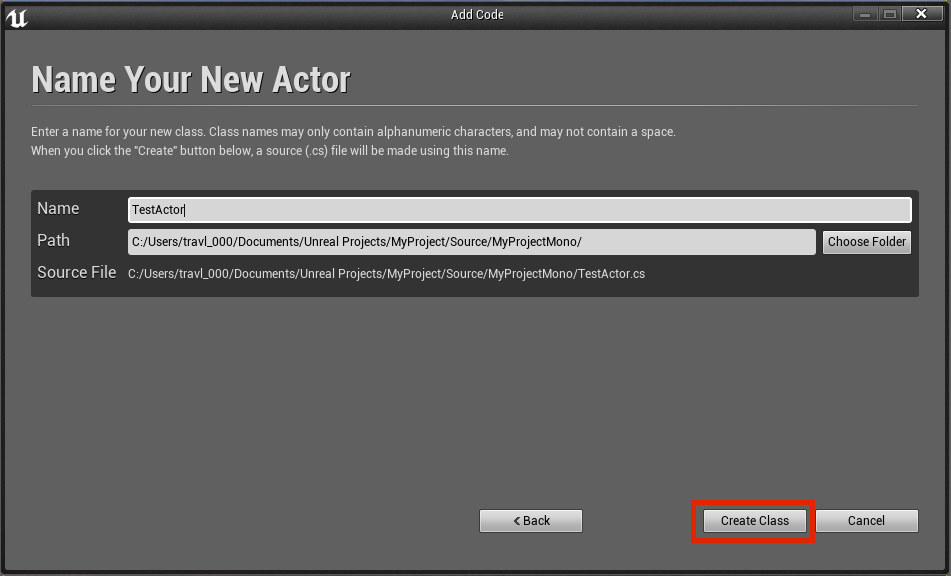
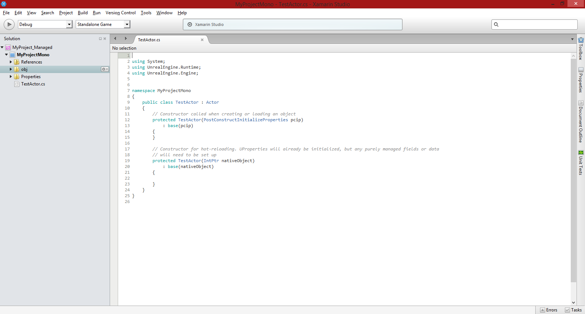

Starting a new project based on C# and Blueprints.
Getting started with Mono for Unreal Engine is easy. You can start adding C# code to your projects in a few easy steps.

Actor
class.
Actor. Let's name
ours TestActor, and click "Create
Class".

Congratulations! You've made your first C# class in Unreal. Now let's do something with it!
Our Actor's behavior will involve controlling
a mesh and rotating it on the screen based on parameters that
we can set from the Editor.
To start off with, you should have a blank solution with one project inside of it, called MyProjectMono. If you're not quite sure what a solution is
and what makes it different than a project, don't fret--we'll learn about that later.
Inside your MyProjectMono project, you should have three folders and a file called TestActor.cs. This is the file we're interested in right now.
Open it up; it should look like this:
Let's add some properties to this.
We want the properties to be surfaced to the Unreal Editor both to be settable by the game designer, as well to allow the object properties to be serialized automatically by Unreal Engine.
To do this, in addition to declaring the C# properties, we
simple add the [UProperty] attribute to each
property. There are a number of configuration options to
use, but in this case, we merely want to specify where in the
UI the properties should be displayed.
Put the following code inside TestActor, above the constructors.
Now that our TestActor is defined, designers
can create instances of TestActor by selecting it
from the list of available objects in Unreal Engine Editor and
setting the parameters, as illustrated by the screnshot below:
Note that any properties that have been decorated
with [UProperty] are automatically serialized for
us, making them editable through the editor.
When our TestActor object is constructed,
Unreal invokes a special constructor that takes
a PostConstructInitializeProperties parameter.
We can use this to create any subobjects that we need to
initialize. In our example, we're going to create a static
mesh to give our TestActor a 3D model.
We can initialize our mesh object by putting the following code into the first constructor:
{% highlight c# %} protected TestActor(PostConstructInitializeProperties PCIP) : base(PCIP) { MeshComponent = PCIP.CreateDefaultSubobject<StaticMeshComponent>(this, new Name("StaticMeshComponent0")); SetRootComponent(MeshComponent); RotateClockwise = true; RotationRate = 20.0f; } {% endhighlight %}This sets some default values for our TestActor.
Now it's time to give our Actor some
behavior. Let's override the
ReceiveTick method. ReceiveTick is Unreal Engine's update method,
invoked on every frame. Add the following method to our TestActor class:
This changes our TestActor's rotation by an
amount determined by the RotationRate
and RotateClockwise properties, normalized
by DeltaSeconds.
Mono for Unreal Engine uses the Xamarin Studio convention of Solutions and Projects to organize code, and the setup is similar to Visual Studio's C++ Solutions that you're used to in Unreal Engine. A Solution contains one or more Projects, and is typically used to organize libraries and individual platform launchers.
We can add C# functionality to an Unreal Engine project by creating a new Xamarin for Unreal Engine Solution or Project type. The organization of our Solution depends on the platforms we want our game to support.
We can target a single platform with a Solution that contains a single Project for C# code. When compiled, this code loads directly into Unreal Editor or into your game.
Supporting multiple platforms - including mobile platforms - requires a different architecture. In a multi-platform solution, all game code goes into a Library Project. This can be either a native Library Project for a single platform or a Portable Class Library (PCL) that contains code shared by multiple platforms. A PCL can use all the APIs available in the Portable Class Libraries API as well as the Xamarin.Unreal.dll API. This shared code is used inside the Editor as well as inside the game window (or the simulated mobile game window) in Unreal Engine.
The code to target each individual platform is housed in new Projects of type Unreal Engine. For example, an iOS game would be housed in a Project type of Android > Unreal Engine Project). The Unreal Engine Project type contains a platform-specific host that boots the application, gives control to the native binding, and calls into Unreal Engine to start the game at a given point in time.
The screnshot below is an example of what a multi-platform Solution might look like in Xamarin Studio:
{kind=link}